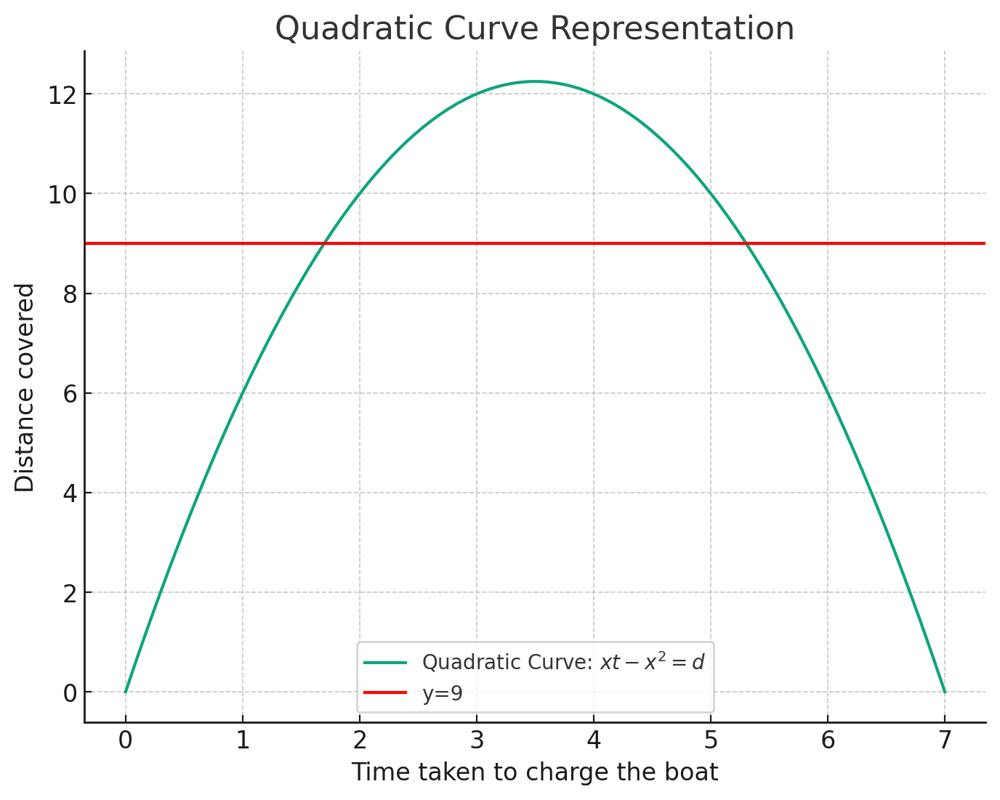

Advent of Code 2023 [Writeup]
Dec 2023
The following are writeups for each day's puzzles of advent of code 2023. All solutions are written in Python and can be found here https://github.com/hexhowells/AdventOfCode.
Day 01
Puzzle · SolutionPart 1
Each line consists of characters with some of those characters being integers, we can use some regex ("\d") to extract single digits from the string then concatenate the first and last digits found and accumulate. Since we're working with all single digits concatenation can be done by multiplying the first digit by 10 then adding the second, which will be faster than converting to strings and back.
Part 2
Part 2 requires parsing not only the individual characters but sub strings in order to find digits, this can be done in a hacky way by using Python's replace() function. Here we can replace each occurrence of "one", "two", "three", etc with its respective digit then do the same as part 1.
However consider the edge cases:
twone
oneeight
sevenine
when replacing the sub string with a digit we corrupt the other sub string (e.g. "2ne" therefore to make our solution even more hacky we can keep the first and last character of the sub string inserting the digit in between.
# convert the digit strings into single digit values
def convert(line):
for i, digit in enumerate(['one', 'two', 'three', 'four', 'five', 'six', 'seven', 'eight', 'nine']):
line = line.replace(digit, digit[0] + str(i+1) + digit[-1])
return line
Day 02
Puzzle · SolutionPart 1
This problem is mostly input parsing, separating each line into a game ID and each game allows us to iterate over each game checking if any of the cubes for any of the games exceed the given threshold, if they don't we accumulate the game ID.
This was performed using some Python string parsing (.split()) and some regex to extract the relevant values
Part 2
Part 2 was much the same but instead keeping track of the number of cubes used throughout multiple turns of a single game, we then get the maximum number for each colour and multiply then accumulate to get the answer.
Day 03
Puzzle · SolutionPart 1
Today's problem was a grid problem, i used my custom grid class in my helper file which lets me iterate over all the points, get neighbours, handle valid points, etc.
First we need to find all the symbols by iterating over each point in the the grid and get any points that are not . or a digit. For each symbol we can check if any of the neighbours of that symbol are digits (which will be a single digit from a valid part number) and record the coords of that digit.
...*......
..35..633.
......#...
6 and 3 are digits next to '#'
3 and 5 are valid digits next to '*'
Now we have a bunch of coords of digits that belong to valid part numbers we need to get the full part number, this can be done by starting at the found digit and moving backwards and forwards through the row until we hit a non digit symbol.
.664.598.. # move left until we hit a non digit
^
.664.598..
^
.664.598.. # found start of digit
^
.664.598.. # move right until we hit a non digit
^
.664.598..
^
.664.598.. # found end of digit
^
The last step is to remove any duplicates since a part number may be adjacent to multiple symbols or we may find multiple digits from the same part number next to a symbol. We can then accumulate the results.
Part 2
Part 2 was relatively straight forward given the above solution. Now we only find neighbouring digits next to the symbol *. Once we extract the full part number and de-duplicate we can check if 2 part numbers are next to the symbol and multiply them together.
Day 04
Puzzle · SolutionPart 1
This problem just requires us to iterate over each scratchcard, find the number of matching numbers, and calculate the score. The score doubles for every matching number we have so this can be calculated with the following:
$$ score = 2^{m-1} \quad \text{where } m > 0 $$Where m is the number of matching numbers.
Part 2
Part 2 was solved using memoisation where for each card number the number of additional cards gained was recursively calculated and saved.
Specifically, for each card we find the number of matches m then get the next m cards (these are our additional winning cards). For each new card gained find the number of cards that scratchcard will gain, this will either already be known from previous calculation or need to be recursively calculated. An overview of the pseudocode can be seen below:
1. for each scratchcard
2. m <- number of matches
3. for each new_card given by m
4. if num_cards(new_card) already known
5. accumulate to answer
6. else
7. calculate num_cards(new_card) and add answer to known
Where num_cards() is steps 2 through 7
Day 05
Puzzle · SolutionPart 1
Part 1 is relatively straight forward once the rules of mapping numbers are understood, take the following rule
50 98 5
Here the range in which we can map values is 98 - 102, 102 is computed with 98 + 5 - 1. This can be visualised with the following:
98 -> 50
99 -> 51
100 -> 52
101 -> 53
102 -> 54
So any value in the range 98 - 102 will be converted to the respective destination value. The simplest method to quickly convert from the source to the destination is by subtracting the input value by the difference between the source and destination 98 - 50 = 48. Hence the value 102 can be converted with the following:
102 - 48 = 54
Applying this method we can parse the mapping rules for each map type, and iteratively convert each input value (initially the seeds) to the new value. This is done by checking if the input value is within the source range and applying our quick conversion trick, if the value is not in any of the source ranges then we don't change it.
Part 2
Part 2 is where things get tricky. Here the mapping rules are the same but the input is interpreted as the following:
79 14 55 13
v
(79 14) & (55 13)
v
[79, 80, 81, 82, 83, 84, 85, 86, 87, 88, 89, 90, 91, 92] &
[55, 56, 57, 58, 59, 60, 61, 62, 63, 64, 65, 66, 67]
The final two lists are now our inputs, this is manageable for the test data and the same method for part 2 can be applied, but there are just too many values in the input data to map them all.
In order to optimise our solution we need to consider the input not as individual values but as ranges. As we can see above the two lists are just ranges, one between 79 - 92 and another between 55 - 67
Since the mapping is also done in ranges (the values 98 - 102 map to 50 - 54) we can just keep track of the ranges of our values instead of individual integers. Consider this example:
input: 99 3
input range: 99 - 101
does the input range fall into the first map? (98 - 102)
...Yes!
then map the input range to the new input range:
(99 - 101) -> (51 - 53)
We can see from the example above that instead of mapping each individual value between 99 and 101 we instead mapped the lower and upper bound of the range. Since the problem is asking for the smallest resulting value we will be able to find it in one of the lower bounds!
The only thing to consider here is what if the input range doesn't perfectly fit within a map's range? Here we will need to split the input range, mapping the range that falls within the map's boundaries and creating a new range. Again consider the example:
input: 99 8
input range: 99 - 106
does the input range fall into the first map? (98 - 102)
...Partially!
then split the range into sections that do and don't fall into the map
(99 - 106) -> (99 - 102) & (103 - 106)
now map the section that falls into the range of the map
(99 - 102) -> (51 - 54)
now we are left with two ranges:
(51 - 54), (103 - 106)
Doing this for each map, splitting the input ranges where required and mapping the ranges to new values when possible will lead us to the solution! Some edge cases need to be considered such as if the start or the end of the input overlaps the map, not changing the input range if it doesn't fall into any of the maps, and checking any split off input ranges in case it falls into a different map.
Once we have converted the input ranges through each the maps and have our output ranges, we can simply check the smallest value in our ranges, this will be the smallest output that corresponds to one of our inputs!
Day 06
Puzzle · SolutionBoth parts of today's puzzle can be solved with brute force since the inputs are not too large and finding the answer is computationally quite light. However there is a more efficient solution which runs in O(1) time.
To solve today's puzzle in O(1) time we can use quadratic inequalities. First lets express our problem as a mathematical statement:
$$ \large x(t - x) > d $$Where x is how long to charge the boat, t is how much time we have, and d is the best distance that we have to beat. Here we subtract how much time we spend charging the boat with the time available, then with the remaining time we cover x distance every second.
Lets quickly plot the outputs of the first example on the puzzle to visualise that we are dealing with a quadratic.
We can see from the plot that by charging the boat for 0 seconds results in the boat going nowhere, same for spending the entire 7 seconds charging the boat. We can see however that the distance we cover is quadratic and there are two points where we cross the boundary for beating the current record (the red line). Any point above the red line beats the current record, so if we can find the critical points (in this case 2 and 5) then we can find the total number of configurations possible to beat the current record.
To find the critical points we first need to rearrange our equation into the form of a quadratic.
$$ \large xt - x^2 > d $$ $$ \large xt - x^2 = d $$ $$ \large xt - x^2 - d = 0 $$ $$ \large -x^2 + xt - d = 0 $$For
Now in this form we can solve for x using the quadratic equation to find our two critical points.
$$ \large x = \frac{-t \pm \sqrt{t^2-4 \times -1 \times d}}{2\times-1} $$
Solving for the values t=7 d=9 gives us the following
1.697 < x < 5.303
Since x can only be a whole number the possible valid values are:
[2, 3, 4, 5]
And so our answer for that input is 4!
Day 07
Puzzle · SolutionPart 1
Part 1 is pretty simple just need to implement logic for finding the rank of cards, where a five of a kind has the highest rank and high card has the lowest. Using this logic along with checking which card is the highest if they have the same rank we can just sort the list with a custom compare function.
Find the rank can be done by counting the frequency of each card in a hand. Each hand type will only have one frequency pattern, these are shown below:
Five of a kind (e.g. AAAAA) -> {A: 5} -> (5)
Four of a kind (e.g. A3AAA) -> {A: 4, 3: 1} -> (4, 1)
Full house (e.g. KK66K) -> {K: 3, 6: 2} -> (3, 2)
Three of a kind (e.g. 4QQ8Q) -> {Q: 3, 4: 1, 8: 1} -> (3, 1, 1)
Two pair (e.g. KK393) -> {K: 2, 3: 2, 9: 1} -> (2, 2, 1)
One pair (e.g. QQ724) -> {Q: 2, 7: 1, 2: 1, 4:, 1} -> (2, 1, 1, 1)
High card (e.g. 5A2Q8) -> {5: 1, A: 1, 2: 1, Q: 1, 8: 1} -> (1, 1, 1, 1, 1)
Using these patterns we can find the rank of each card and use that information to sort them. In the case of a tied rank we just iterate over each card in the hand and check which one has the highest value.
Part 2
For part 2 we just need to convert the jokers ('J') into whatever card is the most frequent in the hand (excluding the jokers). We can then do the same method as part 1, keeping in mind that the joker will have a lower value during a tie.
Day 08
Puzzle · SolutionPart 1
Today's problem can be solved quite easily by using a dictionary, storing the current path as the key and the next left/right paths as values. We can then traverse the dictionary using the instructions until we hit ZZZ
Part 2
Using the solution for part 1 to brute force the answer here is too slow. Instead we can notice a pattern, starting from a starting node, it takes the same number of steps to hit a Z node. This can be seen in the example 11A hits a Z node every 2 steps and 22A hits a Z node every 3 steps.
Using this pattern we can find how many steps it takes to reach a Z node for each starting node, then get the least common multiple of those numbers to get our answer!
Day 09
Puzzle · SolutionPart 1
To find the next item in the sequence we can keep generating a new list consisting of the difference between each pair of values until the sum of the list is 0, keeping track of each new list generated. From there we can go back through the list of diff's adding the previous new value to the last element.
Part 2
Part 2 can be solved by reversing the input and using the solution for part 1.
There is a slightly more efficient approach that only requires iterating over the inputs once. Here after generating the diff's we compute both the next and previous new digit in the sequence. The previous new digit is computed by subtracting the generated digit from the start of the list.
Day 10
Puzzle · SolutionPart 1
Part 1 can we solved using breadth-first search, keeping track of the distance. We start at S and search until we have explored all the pipes, every adjacent pipe's distance will just be the distance of the source pipe + 1.
Part 2
For part 2 i decided to explode the grid to twice its size by inserting extra rows and columns between each row and column. Extrapolating the symbols for each row involves looking at the symbol to the left and right, if the left symbol connects to EAST and the right symbol connects to WEST then the new symbol should be - otherwise it should be .. For example:
-L-J|
Expanding the column creates:
-.L---J.|
^ ^ ^ ^
*new symbols marked with '^'
A similar rule can be applied when inserting rows in-between. Now we add | if the above symbol connects to SOUTH and the below symbol connects to NORTH, and add . otherwise.
L|7||
-L-J|
Expanding the row creates:
L|7||
.|.||
-L-J|
When we do this for the entire grid it will be twice as large and any gaps that we can "squeeze" through now are obvious. For better visualisation see the example from the puzzle:
Original Grid
..........
.S------7.
.|F----7|.
.||....||.
.||....||.
.|L-7F-J|.
.|..||..|.
.L--JL--J.
..........
Expanded Grid
...................
...................
..S-------------7..
..|.............|..
..|.F---------7.|..
..|.|.........|.|..
..|.|.........|.|..
..|.|.........|.|..
..|.|.........|.|..
..|.|.........|.|..
..|.L---7.F---J.|..
..|.....|.|.....|..
..|.....|.|.....|..
..|.....|.|.....|..
..L-----J.L-----J..
...................
...................
NOTE: before expanding the grid we need to record the starting position of S then convert it into its valid symbol. This can be done by looking at the surrounding symbols and finding two that point into the start symbol.
Now that we have a clear view of all the empty space we can use the flood fill algorithm to find all the isolated spaces. Any space that touches the edge of the grid is going to be outside or the loop and are not counted. All the points inside the loop will be stored for later.
Before performing the flood fill algorithm we need to clean up the grid. In the above example all the pipes are part of the loop, however for other inputs some of the pipes will not be part of the loop and should be counted as a tile. To resolve this we can use BFS from part 1 to find all the tiles that are part of the loop, any tiles not part of the loop can be converted to .
To perform flood fill we can just start at any . tile thats not already part of a flood area and execute flood fill. Performing flood fill on the above example gives us the following (areas touching the edge are marked as O, enclosed areas are marked as I)
OOOOOOOOOOOOOOOOOOO
OOOOOOOOOOOOOOOOOOO
OOS-------------7OO
OO|IIIIIIIIIIIII|OO
OO|IF---------7I|OO
OO|I|OOOOOOOOO|I|OO
OO|I|OOOOOOOOO|I|OO
OO|I|OOOOOOOOO|I|OO
OO|I|OOOOOOOOO|I|OO
OO|I|OOOOOOOOO|I|OO
OO|IL---7OF---JI|OO
OO|IIIII|O|IIIII|OO
OO|IIIII|O|IIIII|OO
OO|IIIII|O|IIIII|OO
OOL-----JOL-----JOO
OOOOOOOOOOOOOOOOOOO
OOOOOOOOOOOOOOOOOOO
We now have all the enclosed tiles! But there is one problem, because we expanded the grid we have extra tiles that shouldn't count and need to be removed from our total. This however is quite simple to resolve, we simply count all tiles marked with I that have even X, Y coordinates.
Marking all the I symbols that have even X, Y coordinates with X gives us the following:
OOOOOOOOOOOOOOOOOOO
OOOOOOOOOOOOOOOOOOO
OOS-------------7OO
OO|IIIIIIIIIIIII|OO
OO|IF---------7I|OO
OO|I|OOOOOOOOO|I|OO
OO|I|OOOOOOOOO|I|OO
OO|I|OOOOOOOOO|I|OO
OO|I|OOOOOOOOO|I|OO
OO|I|OOOOOOOOO|I|OO
OO|IL---7OF---JI|OO
OO|IIIII|O|IIIII|OO
OO|IXIXI|O|IXIXI|OO
OO|IIIII|O|IIIII|OO
OOL-----JOL-----JOO
OOOOOOOOOOOOOOOOOOO
OOOOOOOOOOOOOOOOOOO
Now we just count the number of valid tiles (X's) to get our answer!
Day 11
Puzzle · SolutionBoth part's of today's problem can be solved with the same solution.
Instead of inserting rows into the grid we can just scale the coordinates of the galaxies and compute the distances from there. First we need to find the coordinates of each galaxy in the grid. Given the example grid from the question the galaxies are at the following coordinates:
...#......
.......#..
#.........
..........
......#...
.#........
.........#
..........
.......#..
#...#.....
Galaxy Coordinates:
(0, 3)
(1, 7)
(2, 0)
(4, 6)
(5, 1)
(6, 9)
(8, 7)
(9, 0)
(9, 4)
Next we note the range of coordinates 0 - 9, for both the rows and columns we can observe that there are some values that are missing (between the range)
missing rows | missing cols
--------------|-------------
3 | 2
7 | 5
| 8
Since these rows and columns have no galaxies they will be the ones we need to expand.
To expand the coordinates we can iterate over each coordinate (row, column) and count how many missing rows/columns are behind our coordinate values, we then add an expansion factor to the value for every missing row/column. In other words if the expansion factor is 10and a galaxy is on row 8 then there are two missing rows behind it (3 and 7) therefore we need to add 20 to the row value.
Scaling the first few coordinates gives us:
With expansion value = 10
(0, 3)
row value 0 is larger than no missing rows, so don't change it
col value 3 is larger than 1 missing columns (2) so add 10
new coord = (0, 13)
(1, 7)
row value 1 is larger than no missing rows, so don't change it
col value 7 is larger than 2 missing columns (2, 5) so add 20
new coord = (1, 27)
.
.
.
(9, 4)
row value 9 is larger than 2 missing rows (3, 7) so add 20
col value 4 is larger than 1 missing columns (2) so add 10
new coord = (29, 14)
With our scaled values we can now iterate over each pair of galaxy coordinates and calculate the minimum distance between them. This is done by getting the absolute difference between the rows and columns and summing the result
Minimum distance between (1, 27) and (29, 14)
row distance = |1 - 29| = 28
col distance = |27 - 14| = 13
Total distance = (28 + 13) = 41